Line Runner
A gnarly wobble-bass synth where you draw the movement. Paint how each note's volume, pitch and tone change over time, loop the part you like, and push it through a drive section, fourteen filters and a full effects rack.
- Mono, or up to 16 voices
- 4 generators · 12 types
- Sampler with velocity layers, round robin, choke groups
- FM, ring and sync between any generators
- 5 drawn envelopes
- Mod matrix, up to 32 rows
- 14 filter types
- 22 effects · 4 slots
- 8 macros
- XY performance pad
- AU · VST3 · Standalone
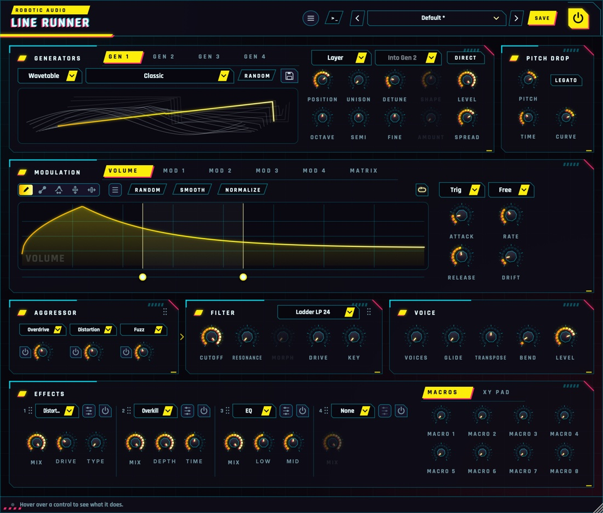
Quick start
Five minutes from install to wobble.
Load a preset
Use the arrows or the menu in the header. Wobble1–13, Speed Wobble and Talking Bass are good starting points.
Play low
Line Runner starts mono: one note at a time, the last one wins. Hold a note to hear the loop of the volume envelope repeat. Turn up Voices for chords.
Draw
Drag across the Volume envelope to draw a new shape. Try RANDOM for instant rhythms.
Sync it
Set the envelope's Sync to Note and its Rate to 1/1 so the wobble locks to your song's tempo.
Make it nasty
Switch on a drive stage in the Aggressor (try Fuzz or Wavefolder), pick the MS-20 or Diode filter, and route Mod 1 to the cutoff.
Save
Press SAVE in the header. Your preset joins the list, saved with every setting and every drawing.
The window
Six areas, top to bottom, roughly in the order the sound flows.
- Header
- The preset bar (previous, next, the list, SAVE), the power button (bypass) and the menu with this manual. Click the logo for version and credits. With an AI key, a >_ beside the preset bar opens the designer. Until Line Runner is licensed, a DEMO or TRIAL chip beside the menu opens the licence.
- Look
- Menu (three lines) > Look dresses the window: Theme picks Cyberpunk (the default), Modern, Alien, Professional, Retro or Vintage, each with its own knobs; Colour keeps the theme's own colour or picks any other; Background and Foreground lighten the surfaces or the text, labels and lit parts in three steps, for anyone who finds the window too dark. The look is kept with the session, never with presets.
- Generators
- Tabs Gen 1 to Gen 4: what makes the raw tone.
- Pitch Drop
- A fast pitch slide at the start of every note: the classic "dive-bomb" attack.
- Modulation
- The drawn envelopes Volume and Mod 1–4, and the Matrix that routes them (and MIDI and the macros) to almost anything.
- Aggressor · Filter · Voice
- Three drive stages (18 algorithms), a 14-type filter, and the voice: how many notes play at once, portamento, transpose, bend and level.
- Effects
- Four effect slots in series and, beside them, two tabs: the eight macro knobs or the XY pad.
Using the controls
| Do this | To |
|---|---|
| Drag a knob up or down | change it (the value shows while you touch it) |
| Cmd / Ctrl / Alt + drag | fine adjustment |
| Double-click a knob | reset it to its default |
| Click a lit chip (LEGATO, SPRING…) | switch that part on or off |
| Right-click a knob the matrix can move | route a modulation source to it |
| Right-click an effect control or a slot's Mix | route a modulation source (a macro, an envelope…) to it |
| Drag a card's grip (⠿) | reorder: Aggressor and Filter, or effect slots |
A knob that something modulates shows a thin ring around it: the range the modulation can take it over, and a dot where it is right now.
Signal flow
What happens to a note, left to right.
Each note is a voice with its own generators, envelopes and modulation, and its own Volume envelope sets its level; the voices then share one Aggressor, filter and effects rack, which follow the newest note's modulation. The Aggressor's three drive stages run in order, left to right, each only when its power button is lit and each with its own algorithm (Overdrive, Distortion and Fuzz to begin with). The filter sits after them, or before them: drag a card by its grip (the dots at its top right) past the other to swap them; the sound runs left to right, with an arrow between. Filtering first and then distorting gives the classic growl.
Generators
Four generators, each any of twelve types. Generator 1 plays the note; 2, 3 and 4 layer with it or modulate any generator.
The card's tabs Gen 1 to Gen 4 switch between them. Every generator has the same set of types, its own table, wave or drawing, its own Position, Shape, unison and detune, a Level and a DIRECT switch. Generator 1 is always on and sets the note's pitch; Generators 2–4 have a power button, their own tuning against it, and a mode.
Types
Choose the type in the first menu: Wavetable, Waveform, Phase Dist, Shaper, Harmonic, String, Formant, Supersaw, Granular, Sampler, Noise or Chip. The Position knob is what each type moves (it takes the type's name for it: Amount, Drive, Morph, Decay, Vowel, Mix, Colour), so a matrix route to a generator's Position sweeps whichever type is playing. Some types have a second control, the Shape knob (Tone, Size, Release); it is greyed out for the others, as are the knobs a type doesn't use.
A cosine whose phase runs unevenly through the cycle (as in Casio's CZ synths). Amount bends it into the chosen shape: Saw, Square, Pulse, or Res Saw / Triangle / Trapezoid, a sine up to 16× the pitch under a window: a resonant-filter sweep without a filter. Clean, vocal, perfect for "yoi" wobbles. The display shows the wave as it plays.
A sine run through a curve you draw, with the same tools as the envelopes: left to right is the sine from −1 to +1, up and down what comes out. Drive sets how much of the curve the sine sweeps: low, just the middle (soft); high, all of it. Folds, steps and kinks all become harmonics; sweep Drive with Mod 1 and the curve is the wobble. It starts as a gentle wavefolder.
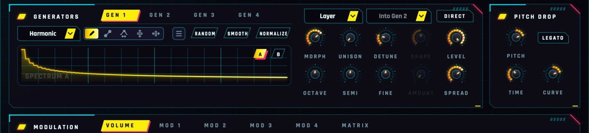
Additive: draw the levels of the first 64 partials, the fundamental at the left (the higher you draw, the louder; quiet partials have plenty of room). There are two spectra, A and B (the buttons in the drawing's corner); Morph blends from one to the other. It starts as a saw (A) and a hollow, odd-partials tone (B). Every generator set to Harmonic plays the same two spectra, each with its own Morph.
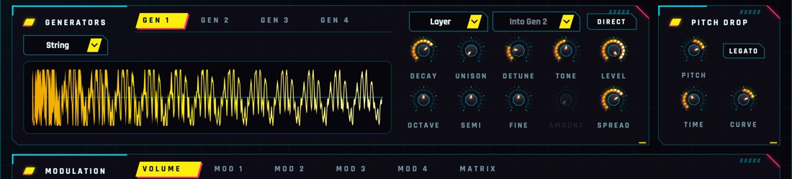
A plucked string: every note strikes it with a burst of noise that rings round a tuned delay. Decay is how long it rings, from a short thud to many seconds; at the top it never dies away, so the volume envelope alone shapes it. Tone is how bright it is. Through the drive it becomes a snarling, clanging bass.
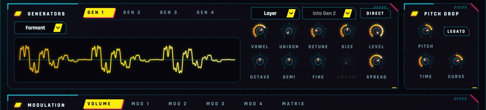
A voice: a pulse that restarts three vowel formants on every cycle. Vowel morphs through A, E, I, O and U; Size makes the voice bigger and darker or smaller and brighter. Route an envelope to Gen 1 Position and it talks, with no filter needed.
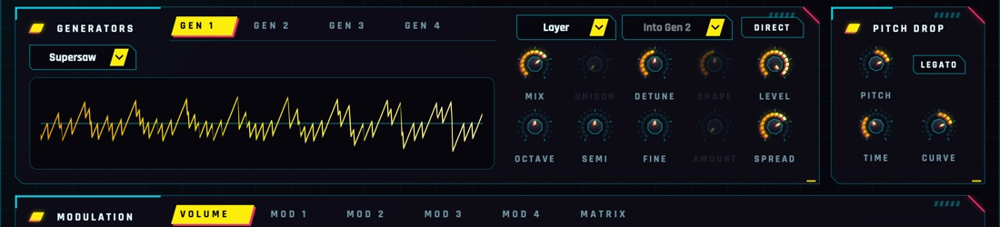
Seven saws with the classic uneven detuning. Mix goes from one saw to the six round it at full strength; Detune opens them from a gentle chorus to the wall. Always seven copies (Unison is greyed out); Spread sets their width.
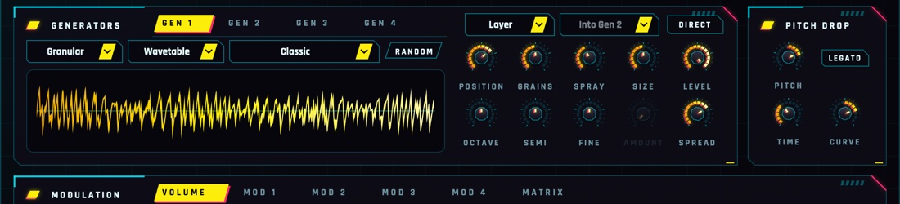
Short overlapping grains of the generator's Wavetable, or of its Sample Map (the second menu): each note reads the take the Sampler would play for its key and velocity, between that take's start and end, at its own pitch on its root. Position is where the grains are taken from, Spray (the Detune knob) how far from it each may land, Grains (Unison) how many play at once and Size how long each is, from 10 ms (buzzy) to a third of a second (smooth). The map is the same one the Sampler type plays: switch between the two and it stays.
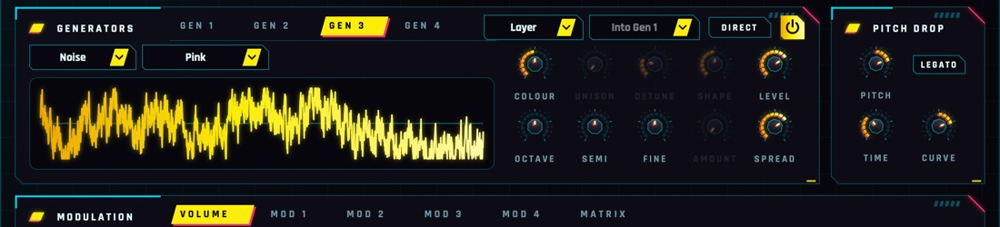
Noise that follows the volume envelope like the rest. The menu picks White (bright hiss), Pink (even, softer), Brown (a low rumble) or Digital: a random value held 16 times per cycle of the note, so the noise has a lo-fi pitch that follows what you play. Colour (Position): under 50 % a low-pass darkens it, over 50 % a high-pass thins it, 50 % leaves it as it is. Through the drive for grit, through the filter for sweeps, or DIRECT for a clean breath on top.
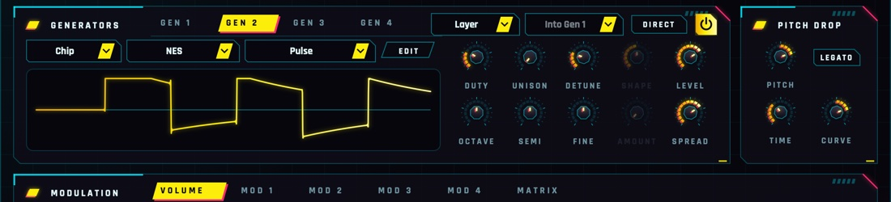
A channel of a classic sound chip, computed as the hardware did it (the same models Bitstorm plays). The second menu picks the chip: the C64's SID, the NES, the Game Boy, the AY (Spectrum, Atari ST), Atari's POKEY, the Amiga's Paula or the Mega Drive's YM2612 FM. Position is the chip's main control: the SID's pulse Width, the NES and Game Boy pulses' Duty, the YM2612's Brightness (its modulators' levels); sweep it from the matrix. EDIT opens the chip's own editor over the window: its channel, waveform, hardware envelopes and sweeps, the machine every Chip generator plays in (PAL or NTSC clock, 50 or 60 frames a second, Chip Limits for the chips' real steps, the AY's and Amiga's models, the FM LFO), and its tracker macros: Volume, Arp, Pitch and Duty/Wave, a step per frame (a looped 0 4 7 on Arp is the chip-tune chord; a noise frame then a falling pitch is a chip drum), with the Game Boy's wave table and the YM2612's four operators on tabs of their own. The chips' envelopes play inside Line Runner's Volume envelope, and Unison, Detune, FM (it bends the chip's pitch) and Ring work as with the other types; Sync restarts the SID's oscillator.
The newer types show a preview: a moment of the generator as it is set now, redrawn as you turn its knobs.
- Wavetable
- Which table to play: built-ins (Classic, Pulse Width, Harmonic Build, Vowels, Hard Sync, Wavefold, Growl, Crush), the tables shipped with Line Runner, your saved ones (Yours) and Random. The 3D view shows its frames, the playing one lit.
- Wave
- In Waveform mode: Sine, Triangle, Saw, Square or Random, a random single-cycle wave. For the classic sub, a Sine with Octave −1 (and DIRECT to keep it clean under a driven bass).
- Random
- Rolls a new random table (3–5 random waves morphing into each other) or, in Waveform mode, a new random wave. Each generator keeps its own, with the session and in presets.
- Save (disk)
- Saves the playing table as a WAV in your wavetable folder; it appears under Yours in every generator's list.
- Position
- Where in the table to play, first frame to last, or what the type moves. Sweep it with Mod 1 in the matrix for moving tones. 0–100 %
- Unison
- Copies of the generator playing together, detuned and spread. 1–7
- Detune
- How far apart the copies are tuned, up to half a semitone either way. 0–100 %
- Spread
- On Gen 1: how wide every generator's copies sit in the stereo field. 0–100 %
- Level
- The generator's level in the mix. 0–100 %
- Shape
- The second control of String (Tone), Formant (Size), Granular (grain Size) and Sampler (Release); a matrix destination too. 0–100 %
- DIRECT
- Lit: the generator skips the drive stages and the filter, so it stays clean however gnarly the rest gets (a sub under a driven bass, a click on a filtered pluck). Off, it goes through them with the others.
Sampler
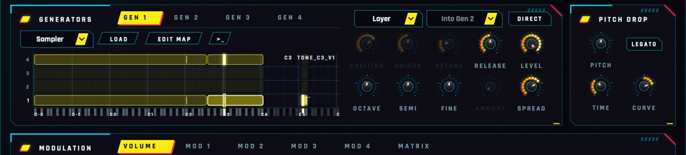
The generator plays its sample map: a sample per key, or one stretched over many, on four velocity layers, with round robin and choke groups. The card shows the map, keys across and layers up (the hardest on top). LOAD brings in audio files or a folder (WAV, AIFF, FLAC, OGG or MP3), or drop files on a key: one file becomes a take on that key, more on the same key take turns; files named by note (C3, F#4) and velocity (v1–v4, pp–ff) place themselves, files without notes go one per key, like a kit. Files are copied into your Samples folder next to Line Runner's presets, so sessions and presets find them again.
Each note starts the take its key and velocity pick, and it rings on under the next notes until its own key or its choke group cuts it. The voice's pitch (portamento, the pitch wheel, the matrix, FM from another generator) bends every take that sounds. Position, Unison and Detune are greyed out; Release (the Shape knob) is how long Gate takes and loops fade out after they are let go, 5 ms to 2 s.
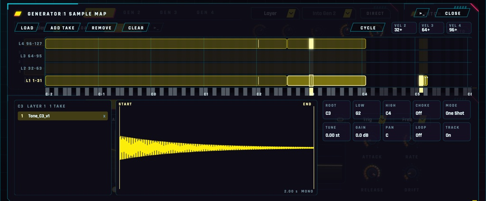
EDIT MAP (or a double-click on the map) opens the whole map over the window, large. Click a key for its takes; the take's waveform shows its START and END markers and its loop to drag. ADD TAKE, REMOVE and CLEAR edit the map, Cmd+Z undoes, CLOSE goes back.
- Root · Low · High
- The note the take sounds at its own pitch, and the keys it covers.
- Choke
- Off, or a group 1–8: a note in the group cuts whatever the group still plays (an open hi-hat cut by the closed one).
- Mode
- One Shot plays to the end whatever the key does; Gate fades out (over Release) when the key is let go.
- Tune · Gain · Pan
- The take's own pitch, level and place.
- Loop
- Off, forward or back and forth between the loop markers, for as long as the note sounds.
- Track
- On: the take follows the keys from its root. Off: it plays at its own pitch on every key it covers: for kicks, clicks and noises.
- Vel 2 · 3 · 4
- Where each velocity layer starts. A layer without takes borrows the nearest one.
- Cycle · Random
- How the takes on one key and layer take turns: in order, or at random (never the same one twice running).
Samples from words
With an ElevenLabs key (Menu > AI...), the map's >_ opens a terminal: describe the sound and press Return. Its Layout menu picks what you get:
- One sample, all keys
- The default: one sample from your words as they are, played on every key from where its pitch measures.
- Auto layout · Separate files · One file, cut up
- With an Anthropic key too, Claude plans a whole map: a kit, an instrument across the keys, velocity layers, round robins and choke groups. Separate files makes each take on its own (best for instruments and long sounds); One file, cut up asks for every sound in one generation and cuts it apart (one go, sounds that belong together, such as a kit); Auto lets Claude choose. Takes join the map as they arrive.
- Length · Takes
- How long each sound is asked to be, and how many versions: for a map, the most round-robin takes per key.
Generators 2, 3 and 4
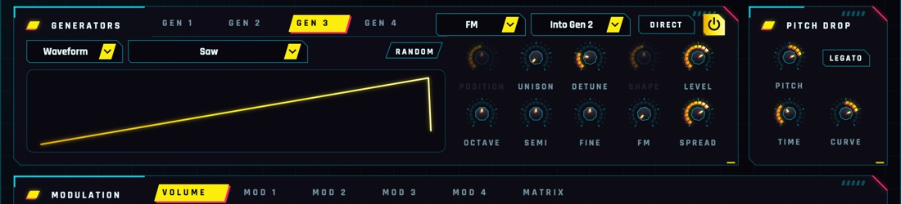
Switch one on with its power button. Beside it are its mode and its target, the generator the mode acts on (Into Gen 1 to Into Gen 4; Generator 1 to begin with):
Simply mixed in. Detune it a few cents or put it a fifth up for thickness. The target menu is greyed out.
It moves the target's phase: growls, metallic barks, talking tones. Amount is the depth. Into a Sampler it moves the playback speed instead (up to 1.5 octaves either way).
The target times it: bells, clangs, robot voices. Amount blends it in. Works on any type, Sampler and Noise included.
It restarts with every cycle of the target; Amount raises its pitch up to three octaves: the sync scream. A Sampler or Noise target has no cycle, so nothing restarts.
Generators can modulate generators that modulate others: Gen 4 into Gen 3 into Gen 2 into Gen 1 makes an FM stack, and several can aim at the same one. Two that modulate each other (Gen 2 into Gen 3 and Gen 3 into Gen 2) work too: one hears the other a sample late. A generator aimed at itself, or at one that is off, just plays, as in Layer.
- Octave · Semi · Fine
- The generator's pitch against Generator 1. ±3 oct · ±12 st · ±100 ct
- Amount
- What the mode does (the knob takes the mode's name): FM depth, ring blend or sync's pitch rise. Sweep it with the matrix. 0–100 %
- Level
- The generator in the mix. In FM, Ring and Sync, turn it down to hear only what it does to its target.
Pitch drop
Every note starts somewhere else and slides home.
- Pitch
- Where each note starts, in semitones from its own pitch: up for a drop, down for a rise, 0 for off. ±48 st
- Time
- How long the slide takes. 1 ms – 2 s
- Legato
- Lit: only a note after silence drops; notes played while another is held go straight (or slide with Portamento). Off: every note drops.
- Curve
- The slide's shape: above 0 it falls fast and settles (punchy), 0 is a straight line, below 0 it hangs on and then falls. ±100 %
Drawn envelopes
The heart of Line Runner: shapes you draw, played on every note.
The Modulation card has five envelopes, each a drawing you make with the mouse:
How loud the note is over time. Always on. The wobble lives here.
Free envelopes for the matrix: route them to the pitch, the filter, the wavetable position, the drive… Mod 1 starts routed to Pitch (±12 st), Mod 2 to Gen 1 Position.
Mod 1–4 have a power button (off: not calculated, nothing into the matrix) and a Bipolar switch. Bipolar, the drawing goes up and down from a centre line and sends −100 to +100 % into the matrix: right for a pitch bend up and down (Mod 1 starts bipolar). Off, it runs from the bottom, 0 to 100 %.
How an envelope plays
When a note starts, the envelope fades in over Attack and plays the drawing from the left. While you hold the key, the part between the two loop handles (the dots under the drawing) repeats. When you let go it fades out over Release, still following the shape.
- Loop
- The button with the arrow picture. Click to step through, right-click to choose: Off (play once, hold the end), Forward, Backward, Palindrome (back and forth).
- Trigger
- Trig: restart on every note. Legato: only after silence, so overlapping notes keep it running. Tempo: never restarts; it follows the song like an LFO (the whole drawing is one cycle) and notes only fade it in and out.
- Sync
- Free: speed set by Rate. Note, Dotted, Triplet: Rate becomes a note value: the whole drawing lasts that long at the song's tempo (120 BPM without a host), and a beat grid appears.
- Rate
- In Free sync: how fast the shape plays. At 1x the whole drawing takes 2 seconds. 0.1–10x
- Rate (synced)
- When synced: how long the whole drawing lasts, as a note value. Clockwise is shorter, so faster. 8/1 – 1/64
- Attack
- How long a note takes to fade into the envelope. Right-click it to disable it: the envelope starts at full level at once (the knob dims and reads Attack Off). 1 ms – 5 s
- Release
- How long it fades out after the key is let go. Right-click it to disable it: the envelope then holds the value it had when you let go (the knob reads Release Off) until the next note. On the Volume envelope the note keeps sounding at that level. 5 ms – 5 s
- Drift
- A smooth random wobble on the output, so no two passes sound quite alike. It never touches the timing: synced envelopes stay in time. Right-click it to disable it (the knob keeps its setting and reads Drift Off). 0–100 %
Drawing & editing
Five tools, edit regions, undo, copy and paste between envelopes.
Tools
- Draw
- Freehand: drag across the shape.
- Line
- Drag a straight line (its ends snap to the grid when synced; hold Cmd for free). Then drag its end dots to move them, or the ring to curve it: up or down for how much, sideways for where the bend sits. Hold Cmd on the ring for an S-curve.
- Warp
- Grab the shape and drag. Sideways moves that moment earlier or later, stretching the rest; up and down bends the shape smoothly around it.
- Lift
- Drag up or down to raise or lower the edit region (or the whole shape).
- Move
- Drag sideways to slide the edit region along, in grid steps when synced. Without a region it shifts the whole shape round, like a phase shift.
Buttons
- Random
- A new random pattern on the beat grid (16 steps when not synced). Click again for another. The menu has more generators: Rhythm, Melody, Organic and Wobble.
- Smooth
- Softens corners and steps. Click again to smooth more.
- Normalize
- Stretches the shape to the full range.
- Menu (≡)
- Undo and redo, copy and paste, zoom, edits (Smooth, Normalize, Flip, Reverse), random generators, Waveforms (sine, triangle, saws, square, exponentials: 1–8 cycles or one per grid step), Windows (the smooth bumps of grain and analysis windows: Hann, Hamming, Blackman, Gauss, Tukey, Kaiser, Expodec and more, one to eight or one per grid step) and ready-made shapes by category, Percussion first: single drum hits (Punch, Snap, 808 Decay, Gated, Clap, Flam), rolls, Bouncing Ball, reverses and sweeps. Right-click the drawing for the same menu.
Edit regions
Shift-drag across the drawing to mark a region. Drawing, edits, Random and shapes then only change that part.
| Handle | Does |
|---|---|
| Upper edge handle | stretches what's inside |
| Round edge handle | repeats the content into the space it's pulled over |
| Top and bottom handles | compress or expand it vertically |
| Small taper handles | fade the amplitude in or out from one end |
| Dots on the curve at the edges | move the start or end value, tilting the content between |
| Edges with Shift held | resize the region itself |
Cmd+C / Cmd+V copy and paste a region, or the whole shape, into any envelope. Shift-click or Esc clears the region.
Zoom
Cmd+scroll or pinch to zoom around the mouse, scroll to pan, Cmd+= / Cmd+- to zoom and Cmd+0 to see it all. The bar along the top shows (and drags) the view.
Modulation matrix
Up to 32 rows: anything moves anything.
Open the Matrix tab in the Modulation card. Each slot is one row: Source × Amount (× Via) + Offset → Destination, optionally smoothed. Click a cell for its menu; drag the Amount, Offset or Smooth cells up and down (Cmd: fine), double-click to reset.
The matrix shows the rows in use and one empty row after them. + ADD ROW adds more, up to 32, and a scroll bar appears when they don't fit. Right-click a row to insert a row above it, remove it (the rows below move up) or clear it.
Quicker still: right-click a knob the matrix can move (a generator's Position, Level, Shape or Amount, the drives, the filter...) and pick a source. It takes a free row at 25 %; the menu ticks the sources already routed there and has Remove All and Edit in the Matrix....
- Source
- Envelopes: Volume, Mod 1–4. MIDI: Velocity, Note (key tracking, centred on C4), Mod Wheel, Aftertouch, Pitch Bend, CC A, CC B and Random (a new value on every note). XY Pad: X and Y. Macros 1–8.
- Via
- A second source that scales the slot, e.g. the mod wheel bringing in an envelope. None: always on.
- Destination
- Generator 1: Position, Detune, Spread, Level, Shape. Generators 2–4: Position, Level, Pitch, Mod Amount, Shape. Voice: Pitch, Level, Pitch Drop, Portamento. Aggressor: Drive 1, Drive 2, Drive 3. Filter: Cutoff, Resonance, Morph, Drive. Macros 1–8.
- Amount
- How far, either way: 100 % moves the destination across its whole range. Pitch destinations show it in semitones (100 % = 24 st). ±100 %
- Offset
- A fixed shift added to the slot, in the same units as the amount (a pitch: semitones). It works with no source too, e.g. Gen 2 Pitch +7 st for a fifth. ±100 %
- Smooth
- Glides the slot's output over this time, softening steps and jumps: a stepped shape turns into slides, a MIDI CC stops zippering. − is none (and costs nothing). 0–2000 ms
CC A and CC B learn from your controller: click Learn under the matrix, then move a knob.
Aggressor
Three drive stages, from warm to wrecked, each running any of eighteen algorithms.
Each stage has a menu with its algorithm, a power button and a knob for how hard it's driven. They start as Overdrive, Distortion and Fuzz and run left to right, so stages can be stacked: Tube into Wavefolder into Bitcrush, say. Changing a stage's algorithm while it plays fades the old one out and the new one in.
- Overdrive
- Warm, slightly asymmetric saturation. up to 30 dB
- Distortion
- A harder clip, for bite. up to 36 dB
- Fuzz
- A biased hard clip, splatty and gated: the gnarliest of the clippers. up to 48 dB
- Soft Clip
- A smooth, symmetric clip with a rounder knee than Overdrive. up to 30 dB
- Hard Clip
- Flat-topped clipping: square and buzzy when pushed. up to 30 dB
- Tube
- Lopsided like a pushed valve: one half rounds off later than the other, adding even harmonics. up to 30 dB
- Tape
- Gentle: squeezes the peaks before it clips. up to 24 dB
- Diode
- One half clips early and softly, the other late and hard. up to 30 dB
- Half Wave
- A half-wave rectifier: the bottom half cut away. Hollow and reedy. up to 24 dB
- Rectify
- A full-wave rectifier: the bottom half folded up, so the note jumps an octave. up to 24 dB
- Sine Fold
- A sine waveshaper: the wave folds over and over as it's pushed, glassy and bright. up to 24 dB
- Wavefolder
- Triangle folding, the West Coast way: sweep the knob for moving harmonics. up to 24 dB
- Wrap
- Past the edge, the wave wraps round to the other side: digital and nasty. up to 18 dB
- Bitcrush
- Fewer and fewer levels. 12 bits down to 3
- Downsample
- Sample and hold: the sample rate drops, folding metallic tones back down. down to 1/64 of the rate
- Harmonics
- A soft clip that turns into the third harmonic (a Chebyshev shaper): an octave and a fifth up. up to 12 dB
- Crossover
- A dead band round zero, like a starved amplifier: quiet parts sputter and gate. up to 12 dB
- Slew
- The wave can only move so fast: sharp edges turn into ramps, high notes dull and thin out.
For Bitcrush the knob sets how few levels remain, for Downsample how low the rate falls, for Crossover how wide the dead band is and for Slew how slowly the edges may move. The drive runs at four times the sample rate, so clipping and folding don't alias.
Filter
Fourteen characters. The knobs' names follow the type.
Moog-style ladder, 24 or 12 dB: fat, warm, the classic.
Clean state-variable filter; Morph blends low-pass → band-pass → high-pass.
303-style squelch.
Saturating, screaming resonance.
Vowels A–E–I–O–U on the Vowel knob: talking basses.
Tuned metallic or hollow; the cutoff is its pitch.
Sweepable notches.
The C64's filter: the 6581's dirty, saturating one or the 8580's clean one, each on its own cutoff range. Morph steps through its modes, LP, LP+BP, BP, BP+HP and HP.
- Cutoff
- The filter's frequency (comb: its pitch; formant: tone; phaser: centre). 20 Hz – 20 kHz
- Resonance
- A peak at the cutoff; high values sing and squelch (comb: feedback; formant: focus).
- Morph
- SVF: mode. Formant: vowel. Comb: damping. Phaser: spread. SID: its mode.
- Drive
- Pushes the signal into the filter: grit and a fatter resonance.
- Key
- How much the cutoff follows the note, from C4. At 100 % it moves an octave per octave, so the tone stays the same up the keyboard.
- Order
- The Aggressor and Filter cards run left to right. Drag one by its grip (the dots at the top right) past the other to swap them: filter first, then distort, for the classic growl; or drive first for a smoother sound.
Voice
How notes connect, and how loud.
- Voices
- Mono (1, the default): one note at a time, the last one played, with legato and portamento between notes. More: chords, each note its own voice with its own envelopes and modulation; the newest note steers the drive, filter and macros, and when every voice is busy the oldest gives way. Mono – 16
- Level
- The output level. −48 – 0 dB
- Transpose
- Moves every note up or down in semitones. Everything follows it: the pitch drop, portamento, pitch modulation and the filter's key tracking. Changing it while a note plays slides there at the Portamento speed. ±24 st
- Bend
- How far the pitch wheel bends the note, up and down. Set it to 0 to use the wheel only through the matrix. 0–24 st
- Portamento
- How long the pitch slides from one note to the next, whether the notes overlap or not (only the very first note starts right on its pitch). 0: no slide. 0 – 2 s
XY pad
Beside the effect slots, switch the Macros tab to XY Pad.
- XY Pad
- Drag the dot to play two modulation sources at once, XY X (left to right) and XY Y (bottom to top), both −100 to +100 % with 0 in the middle. Route them in the Matrix; the pad's corners show where they go. Behind the dot runs a picture of the output's last two seconds, so you see what your moves do. Double-click to centre it. Both are automatable.
- Spring
- Lit (default): the dot glides back to the centre when you let go, like a joystick. Off: it stays where you leave it.
In Mono, the last note wins and each new note restarts the envelopes (unless their trigger is Legato or Tempo). With more voices each note starts its own envelopes.
Effects
Four slots in series, twenty-two effects (Event Horizon among them), each with its own editor.
Each slot has a menu (which effect, in alphabetical order), a power button, a Mix or Send knob and its two most useful controls. The slots run left to right; drag a slot by its number and dots to move it, and all its settings come along.
- Mix
- Crossfades the dry sound and the effect.
- Send
- On Reverb, Reverb 2 and Delay: the dry sound always passes at full level and Send adds the effect on top, nice to automate.
- Edit (sliders icon)
- Opens the effect's own editor over the envelopes, with a live display and every control. Click again (or CLOSE) to close it.
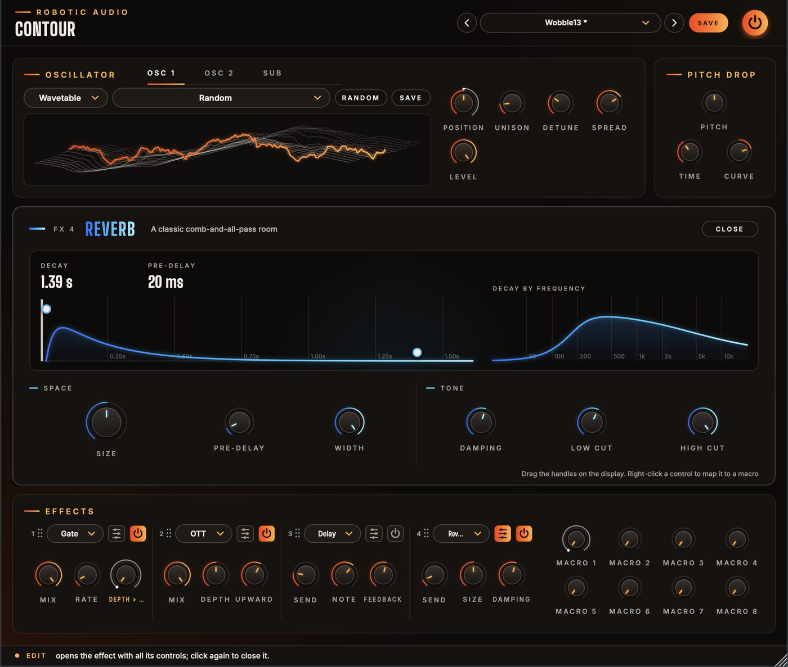
In the editors
The display shows what the effect does, live. Most have handles: drag them to change the effect directly, double-click one to reset it, and use the scroll wheel on it for a second setting (EQ's Q, the compressor's ratio, the filter's morph…).
Overkill
Three-band upward and downward compression
Splits the sound into low, mid and high bands and pushes each one down above a threshold and up below another: everything gets louder, denser and brighter. Depth sets how hard, Time how fast, Upward/Downward each direction; the bands' levels and split points are on the display.
Distortion
Six flavours of drive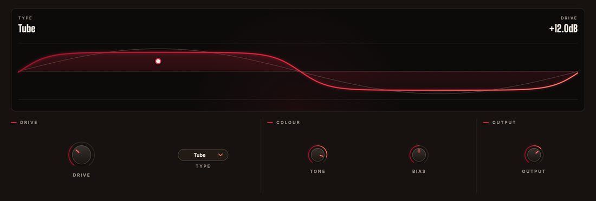
Tube (warm), Fold (wavefolder), Rectify (an octave up), Crush (fewer bits), Downsample and Hard Clip. The display runs a sine through it so you see exactly what it does. Tone tames the fizz, Bias adds uneven, buzzy harmonics.
EQ
Shelves, a bell and two cuts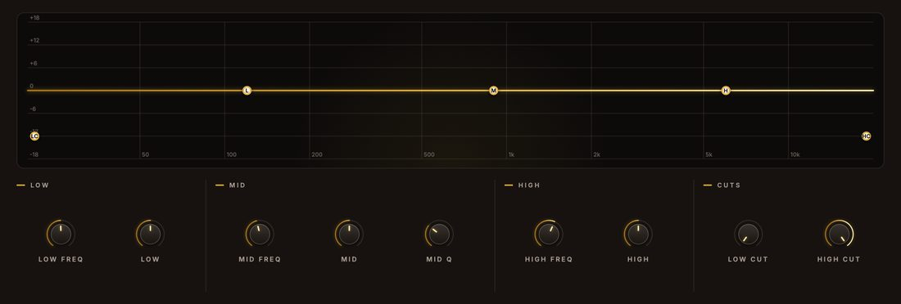
Low and high shelves, a bell with adjustable Q, a low cut and a high cut. Drag the numbered nodes; the wheel on the M node sets its width.
Compressor
A clean, fast peak compressor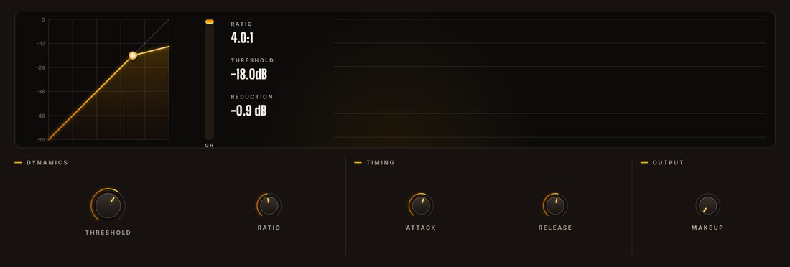
The curve shows input against output level, with a dot where the signal is right now, a gain-reduction meter and a scrolling history. Drag the knee for the threshold, use the wheel on it for the ratio.
Delay
Tempo-synced echoes with tape wobble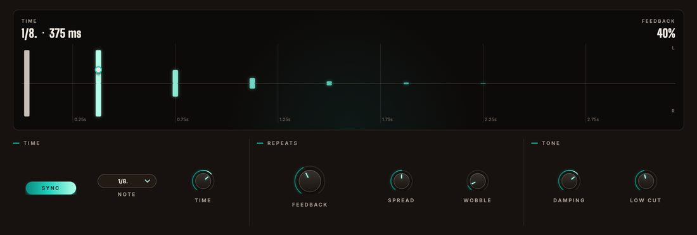
Each repeat is a bar: left above the line, right below, fading with the feedback and darkening with the damping. Drag the first repeat: sideways for the time (it snaps to note values when synced), up and down for the feedback. Spread delays one side for width, Wobble adds tape drift.
Reverb
A classic comb-and-all-pass room
The display shows the tail over time and how long each frequency rings. Size sets the feedback (a longer tail), Damping darkens it as it decays, Low Cut keeps the bass out, High Cut darkens the output.
Reverb 2
A dense, modulated feedback delay network
Decay in seconds, size, pre-delay, diffusion and early reflections, the lows and highs decaying at their own rates (Bass Mult, High Mult and their crossovers), gentle modulation against metallic ringing, width and output cuts. Drag the tail's end for the decay and the top handle for the pre-delay.
Chorus · Flanger · Phaser
Movement
Chorus: drifting copies for width and lushness. Flanger: a swept comb filter, metallic (+ feedback) or hollow (−). Phaser: sweeping notches from 2–12 all-pass stages. Their displays move with the effect's own LFO.
Width · Pitch · Filter · Gate
Utilities with attitude
Width: from mono to extra wide, the low end kept mono below a frequency, plus a Haas delay. Pitch: granular shifting two octaves either way, with fine tune and stereo spread. Filter: any of the fourteen filter types as an effect. Gate: a tempo-synced trance gate following the song.
Drive
Four drive stages, stacked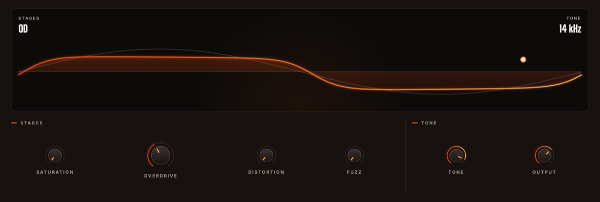
The Aggressor's four stages as an effect: Saturation, Overdrive, Distortion and Fuzz, each with its own amount (0 % is off), at four times the sample rate, then Tone and Output. The display runs a sine through it and names the stages that are on; drag the handle up for overdrive and sideways for the tone, scroll it for fuzz.
Crusher · Ring Mod · Freq Shift · Tape Stop · Pan
Strange machines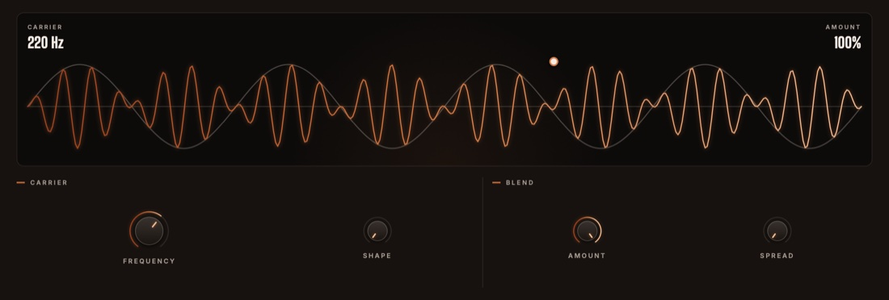
Crusher: fewer bits and a lower sample rate, both gliding smoothly. Ring Mod: the sound times a carrier from a tremolo to clangy bells, sine to square. Freq Shift: every frequency moved by the same number of Hz, with a feedback spiral. Tape Stop: a tape that slows (the pitch falls and the sound drags) and catches up afterwards. Pan: the sound moved between the speakers, narrowed first by Width. Map them to a macro and the matrix moves them.
Macros
Eight knobs that can move many things at once.
Macros are sources in the matrix: right-click any knob, effect control or a slot's Mix and choose a macro, or pick it as a Source in the Matrix tab. Each route has its own Amount, so one macro can drive any number of things, each over its own range (set the control where the range starts, the Amount to how far it goes).
Macros are targets too: route an envelope or an LFO-like Mod into a macro and everything that macro drives moves with it. They're automatable in your DAW and can be renamed: right-click a macro knob.
Presets
Everything is saved: knobs, drawings, random tables, effects and macros.
Use the arrows to step through presets or click the name for the list. SAVE stores your sound as a user preset; the menu also has Save As, Delete and Open Folder. A * after the name means you've changed something since loading it.
User presets are XML files in ~/Library/Audio/Presets/Robotic Audio/Line Runner (macOS) or Documents/Presets/Robotic Audio/Line Runner (Windows): easy to back up and share. Saved wavetables are in a Wavetables folder beside them.
Designing with Claude
Describe a sound; Claude sets Line Runner to make it.
With your own Anthropic key, the >_ beside the presets opens a designer: describe what you want in your own words, such as "a growling dubstep bass that wobbles in eighths", and Claude sets the four generators, the Aggressor and filter, the voice, the Volume and Mod 1-4 envelopes, the matrix and the macros, and the effects with all their settings and macro mappings. It is told what every part does and how it is set now, so it can design from scratch or change only what you ask for.
- Keys
- Menu (three lines) > AI...: an Anthropic key for Claude, and an ElevenLabs key for new samples. They are your own, shared by every Robotic Audio plugin and kept on this computer, never in sessions or presets; each design uses your credits with the service. Without a key nothing of this shows.
- >_
- Left of the preset bar, while a key works: opens the designer over the window. Type a description and press Return (or EXECUTE); ESC closes it, and what is running carries on.
- PATCH
- Claude sets the patch, as a NEW SOUND from your words or EDIT THIS: the patch as it is, changed as you ask ("darker", "slower attack"), keeping the rest.
- SAMPLES
- A new sample too, for the first generator playing a sample map (Sampler, or Granular reading the map): it goes on every key. Claude writes its prompt and ElevenLabs makes it, in up to four TAKES; the first plays as soon as it arrives, the TAKE buttons switch between them, and all are kept with your samples. With PATCH on, a sample is made only if the patch Claude designs plays one (Claude is told whether it does); SAMPLES alone makes one to fit the patch as it is and changes nothing else. With only the ElevenLabs key, your words are the sample's prompt as written.
- REVERT
- Puts the patch back as it was before Claude's last design.
- SAVE AS PRESET
- Keeps the design as one of your presets, named after your words.
- The log
- What Claude made, and what it changed, part by part.
- >_ and AI...
- The designer and its keys: see Designing with Claude.
Licence
Try it, activate it, move it to another computer.
Without a licence, Line Runner runs as a demo: the sound drops out for 3 seconds every 45 seconds. Everything else works, saving included, so you can try it properly and keep what you made when you buy it. While it isn't licensed, the header shows DEMO (or TRIAL with the days left); click it, or choose Licence... in the menu, for the licence panel. It also opens by itself when the window opens in demo.
- ACTIVATE
- Opens the shop in your browser. Sign in, choose your licence for this computer, and Line Runner unlocks a few seconds later.
- START TRIAL
- Everything, free, for 14 days, once per computer. The header counts the days down. Activate a licence at any time; your sounds and sessions stay as they are.
- BUY
- The plugin's page on roboticaudio.com, with its Buy button.
- SAVE DEVICE FILE / LOAD LICENCE FILE
- For a computer without the internet. Save the device file, take it to the shop's activation page on a computer that is online, and load the licence file it gives you back.
- DEACTIVATE
- Frees this computer's seat, so you can activate the licence on another one. CHECK NOW confirms the licence with the shop straight away.
Shortcuts
On Windows and Linux, read Ctrl for Cmd.
| Keys | Where | Does |
|---|---|---|
| Cmd + drag | Knobs | fine adjustment |
| Double-click | Knobs, display handles | reset to default |
| Shift + drag | Envelope | mark an edit region |
| Shift + click, Esc | Envelope | clear the region |
| Cmd Z · Cmd Shift Z | Envelope | undo · redo (100 steps) |
| Cmd C · Cmd V | Envelope | copy · paste, also between envelopes |
| Cmd = · Cmd - · Cmd 0 | Envelope | zoom in · out · show all |
| Cmd + scroll, pinch | Envelope | zoom around the mouse |
| Cmd while drawing a line | Envelope | ignore the grid |
| Cmd on a line's ring | Envelope | S-curve |
| Scroll wheel | Display handles | a second setting (Q, ratio, morph…) |
| Double-click | XY pad | centre the dot |
Sound recipes
Starting points; then draw your own.
Volume: a held shape. Mod 1: a sine (Menu → Waveforms → 1 cycle), Sync Note 1/4, Trigger Tempo. Matrix: Mod 1 → Cutoff +70 %. Filter: Ladder LP 24, resonance 40 %. Overdrive on.
Filter: Formant. Mod 1 → Filter Morph +100 % with a slow, wandering shape. Gen 2 in FM at 30 %. Drift 20 % on Mod 1.
Pitch Drop +36 st, Time 60 ms, Curve 70 %. Volume: short decay, loop Off. Distortion: Fold. Reverb 2 send 25 %.
Gen 1 saw, Unison 5, Detune 35 %. Gen 2 Layer saw, Fine +12 ct. Gen 3 Waveform sine, Octave −1, Direct. Chorus and Width 140 % after.
Volume: Random (Menu → Random → Rhythm) synced to 1/1. Effects: Gate 1/16 at 70 % depth, Overkill at 60 %.
Gen 1: Formant, Size 40 %. Mod 2: a slow wandering shape, Matrix: Mod 2 → Gen 1 Position +100 %. Overdrive on, Gen 2 a sine Waveform at Octave −1.
Gen 1: String, Decay 100 %, Tone 70 %. Fuzz on at 30 %. Filter: Comb +, Key 100 %. The volume envelope does the rest.
Gen 2: Sampler, a kick loaded (in EDIT MAP: Mode One Shot, Track Off), DIRECT lit. Gen 1 a saw through the Aggressor. Volume: Attack 20 ms, so the kick speaks first.
Gen 2, 3 and 4 Waveform sines, all FM: Gen 4 Into Gen 3 (Octave +2), Gen 3 Into Gen 2 (Octave +1), Gen 2 Into Gen 1, their Levels at 0 %. Mod 1 → Gen 2 Mod Amount for the bark.
Gen 3: Sampler with a vocal or a pad. Gen 4: a sine, FM Into Gen 3, Level 0 %, Amount 20 %: the sample wobbles at audio rate. Try Ring for a robot voice.
Gen 2 Sync, Level 0 %. Matrix: Mod 2 → Gen 2 Mod Amount +80 % with a rising ramp. Filter: MS-20, resonance 60 %.